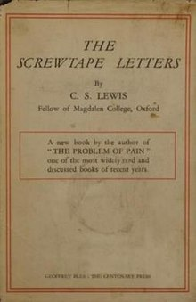
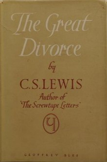
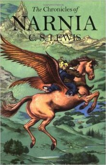
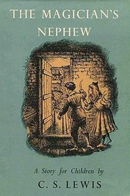
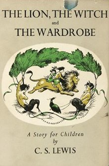
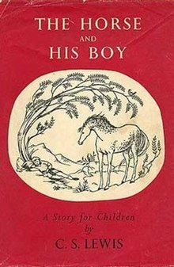
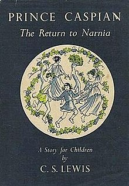
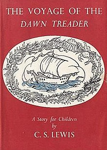
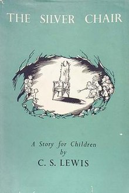
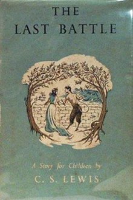

Course: Fantasy & Religion
Lecture #4: C.S. Lewis
NOTE: Text in Highlight is Optional
The two single books of C. S. Lewis that qualify as Fantasy are his Screwtape Letters (1942), and The Great Divorce (1945) then will deal has Fantasy Books & watch a film on his life Through Joy and Beyond (60min)

THE SCREWTAPE LETTERS: (1942)
The book is a comic, satirical look at perhaps the most serious subject possible, damnation. The letters first appeared in a religious journal called, The Guardian.
Basically it is the most direct of several books about devilry that C.S. Lewis wrote and, of all his books, the one he found most unpleasant to compose. It gave him, he says, a sort of spiritual cramp because of the inverse perspective of Hell it employs.
One reader, a country clergyman, wrote in to cancel his subscription to the magazine because he said " much of the advice given in these letters seemed to him not only erroneous but positively diabolical."
The Screwtape letters consists of letters of advice and warning from a senior devil prominent in the lowerarchy of hell to his nephew Wormwood, a trainee tempter. Wormwood, fresh from the Tempters' training college, has been assigned a young man. His task is to secure his damnation.
Unfortunately for Wormwood, his client becomes a Christian. Screwtape passes on a number of useful suggestions for reclaiming the young man. These come both from his centuries of experience and from information from Hell's Intelligence Department.
Screwtape is also in touch with other tempters assigned to the patient's friends, acquaintances, and relations. Wormwood particularly sees great possibilities in the person of the young man's mother who is very trying.
The young man successfully avoids the pull of the inner ring of a smart set of people. For Lewis, the "inner ring", as discussed in That Hideous Strength and in an essay he published, was a perversion of friendship.
Friendship, Lewis wrote, causes perhaps half of all the happiness in the world, and no inner Ringer can ever have it. Unlike friendship, the desire to be on the inside of a group leads to a perpetual anxiety, even if achieved, whereas real friendship is "snug and safe" because it is free of this desire.
Lewis believed that in most associations of business and professions there were inner rings as well as official hierarchies. "You are never formally and explicitly admitted by anyone. You discover gradually, in almost indefinable ways, that it exists and that you are outside it; and then later, perhaps, that you are inside it.”
Inner rings provide a climate in which evil becomes easier. Until a person conquers the fear of being an outsider, an outsider he or she will remain.
Wormwood faces Hell when, first, his patient falls in love with a Christian girl, and secondly, when he fails to keep the young man out of the danger of death, and he is killed in an air raid, forever out of hell's clutches. Screwtape’s only consolation lies in devouring his incompetent nephew.
Lewis seems to be a master of revealing the subtleties of the diabolical mind. Screwtape is shown to be urbane, intelligent, witty and even charming. These qualities are tools which can be used for good or ill, no evil in themselves.
What the Screwtape Letters tries to show is that evil seldom pops up as the genocidal maniac slaughtering millions (though it does on occasion show up in the guise of a Hitler or a Stalin). For individuals, it generally takes the form of little urgings that come from within, telling us to respond brusquely to a family member or to frown on someone we don't approve of.
It is evil in our everyday lives that Screwtape addresses, petty things that add up to a loss of morality or the demise of our individuality.
The book is sprinkled with advice from Screwtape to Wormwood about how to muddy the waters. That is, not letting the patient to clearly see the truth. It tries to show how evil can be overcome by simple, clear actions or thoughts.
Mostly it shows that in the end the battle between good and evil is fought out on the field of one’s relationships with others and most of all, ones relationship to God.
The Screwtape Letters is one of Lewis's most popular books. His view of a personal devel comes over clearly, despite the satirical genre he employs. Lewis did not consider it one of his best books. In 1965 a collection of literary and theological pieces. Screwtape Proposes a Toast, as well as other titles were among them.

THE GREAT DIVORCE (1945)
Like the Screwtape Letters, this story was first serialized in a religious periodical and also concerns the relation of heaven and hell. Lewis casts his story in the form of a dream, with himself as narrator, and does not wish his reader to think that information is being presented about the actual state after death.
This does not mean that Lewis denies an actual heaven and hell. He is in fact concerned in this story to show their plausibility and reality. Lewis in many writings, seems to perceive of Heaven as a new nature that God has planned. The ultimate context of a fully human life, bodies and all. He has the theme of heaven running thru his fiction and is closely linked to his characteristic theme of joy.
Heaven is varied, Hell is monotonous, Hell is the absence of meaning while heaven is reality itself, hell a ghost or shadow. Heaven can only be explored in parable, allegory and fiction are the closest one can come to speaking of heaven. That is why he explored heaven so much through fantasy, as in The Great Divorce, The Voyage of The Dawn Treader, The Last Battle, and Perelandra.
The story opens in hell, with Lewis standing in a bus queue on a pavement in a long, shabby street. He had wandered for hours in similar mean streets. Hell is an endless conurbation of perpetual twilight, where people move farther and farther away from each other. A new building just has to thought to be made, but lacks sufficient reality to keep out the rain that constantly falls.
Anyone in hell who wishes can take a bus trip to heaven, or at least to its outlands. Lewis takes such a trip with a varied collection of ghosts. Upon arrival in heaven, the passengers find it painfully solid, hard and bright in comparison to hell.
Solid people who have traveled vast distances to meet the ghosts try to persuade them to stay, pointing out that they will gradually adjust to heaven and become more solid as they forsake particular follies that hold them back from heaven. Much of the story is taken up with encounters between solid people and ghosts, who were friends, relations or spouses on Earth.
The Great Divorce includes three episodes that have elements of autobiography, including the role of mentors: The Dearf and the Tragedian, the Ghost with a red lizard on his shoulder, and the ghostly character thru which Lewis places himself in the story.
The ghostly character, Lewis, is met by George McDonald who explains what is really happening with the other ghost's conversion opportunities. MacDonald also expounds on doctrines to help Lewis understand heaven. He teaches about the nature of time, the size of Hell, and the meaning of love.
George MacDonald was a Scottish writer (1824-1905) to whom C. S. Lewis felt a great debt. His views on the imagination anticipated those of Lewis and Tolkien and inspired G. K. Chesterton. He was a close friend of Lewis Carroll. His insights into the subconscious mind predated the rise of modern psychology.
MacDonald's sense that all imaginative meaning originates with the Christian Creator became the foundation of Lewis's thinking and imagining. His most famous work is Phantastes (1858) which reading Lewis said resulted in a "baptism of his imagination." MacDonald wrote over 30 novels, several books of sermons, as well as fantasies for adults and children.
MacDonald's role as mentor is a composite form of both the books Lewis read and his friends. He chose Macdonald as his teacher in The Great Divorce because he considered him his master in regard to his writing.
MacDonald explains to Lewis many mysteries of salvation and damnation to him. Lewis particularly questions him about his apparent universalism, the belief that all people will be saved. For Lewis, universalism is ruled out be the reality of the human will. Hell is in fact chosen by the damned. Lewis' portrayal of the damned adds to Sartre's brilliant comment, "Hell is other people" (from: No Exit). The reality that hell is also oneself.
Lewis handles the question of salvation and damnation very sensitively. Out of all the bus passengers, only one accepts the invitation to stay in heaven, after allowing a red lizard of lust perched on his shoulder to be destroyed by a colossal angel.
Despite the intellect, love and power of mentors, the necessity of free choice by the convert is essential. In all the Great Divorce accounts, conversion is blocked until the potential convert decides that he will allow the redemptive event to happen. All the ghosts in heaven can leave by simply getting back on the bus.
Despite his/her power, God will not or cannot convert a soul against that persons will. The convert's position becomes a choice between two options: misery or joy. Lewis and the Dwarf, in the book, resist the supernatural influence and fail to accept the life-giving option.
It is made clear that this conversion process is painful, even physically, as the man with the red lizard exemplified. Mainly tho, it is emotionally painful as one has to confront his/her "ludicrous and terrible things about ones own character". For him, that was pride.
In both The Screwtape Letters and The Great Divorce Lewis highlights practical matters of the Christian life such as family problems, selfishness, disagreement, greed, and the persistence of bad habits.
Fantasy proves a great medium for examining such matters, remembered long after a sermon is forgotten.

CHRONICLES OF NARNIA (1950-1956)
Lewis says of his Narnia Chronicles: "Some people think that I began by asking myself how I could say something about Christianity to children; then fixed on the fairy tale as an instrument; then collected information about child-psychology and decided what age-group I'd write for; then drew up a list of basic Christian truths and hammered out 'allegories' to embody them.
This is all pure moonshine. I couldn't write it that way at all. Everything began with images; a faun carrying an umbrella, a queen on a sledge, a magnificent lion. At first there wasn't even anything Christian about them; that element pushed itself in of its own accord. It was part of the bubbling.
He goes on to say that the fairy tale seemed the best form to express these images. Then, he says, it occurred to him how these stories could steal past a certain inhibition which had paralyzed much of his own religion in childhood. As he says: "Why did one find it so hard to feel as one was told one ought to feel about God or about the sufferings of Christ? I thought the chief reason was that one was told one ought to. An obligation to feel can freeze feelings.
"But supposing that by casting all these things into an imaginary world, stripping them of their stained glass and Sunday school associations, one could make them for the first time appear in their real potency? Could one not thus steal past those watchful dragons? I thought one could.”
THE CHRONICLES:
The Narnia Chronicles are undoubtedly the most popular works of Lewis and although they are recognized as children's fantasy novels, they are also popular with students and adults, including many Theologians. These are not didactic allegories, but rather are well-crafted children's fantasies that incorporate Biblical themes in a new way.
C.S. Lewis recommended that the Chronicles not be read in the order published, but in chronological order as far as Narnian history went. That order is: The Magician's Nephew, The lion the Witch and the Wardrobe, The Horse and His Boy, Prince Caspian, The Voyage of the Dawn Treader, The Silver Chair, and The Last Battle.
No
What I want to do now is deal with several major themes which occur in all the books. But especially The Magician's nep nephew.

The Magician's Nephew: Lewis says this is a very important story because it is about how all the comings and goings between our own world and the land of Narnia first began. It is also about Aslan's creation of Narnia.
This book takes place in 1900 when Digory Kirke and a friend, Polly Plummer explore their attics. Because of Digory's uncle, a Magician, they both end up in a strange world (not Narnia) with one person, Jadis, Queen of Charn. She manages to get back to the attic with the kids.
Jadis causes havoc while in London, starting a street brawl, crashing a cab, etc. so Digory and Polly attempt to get her back to Charn. In the process, they find not only Jadis, but Uncle Andrew, the cab driver named Frank and his horse Strawberry ending up in another world where there seems to be nothing but out of the darkness they hear a wonderful song. The Singer is a great Lion who paces to and frow creating sun, stars trees and flowers, birds and animals.
Jadis tries to stop the lion but ends up running for her life. The lion asks Frank to become the first king of Narnia, and when he accepts, brings his wife from London.
Because Digory is responsible for bring evil into the world in the person of Jadis, Aslan sends him on a mission to fetch an apple from the tree of eternal youth, which is planted as protection for the land.
Aslan gives Digory an apple which he takes back to London when Aslan returns them all. He gives it to his mom, who is sick, and she begins to get better.
Digory's mother gets well, Digory plants the seeds and when the apple tree is blown down in a storm many years later, Digory, who is now a professor, has a wardrobe made from its wood.

The Lion, the Witch and the Wardrobe: (1950) This story takes place in 1940 Earth time and the year 1000 in Narnian time. This is the first tale of Narnia Lewis wrote and its inspiration owed something to evacuee children who lodged in Lewis's Oxford home the Kilns. It began with a picture he saw in his head, as discussed above.
Four children--Peter, Edmund, Susan and Lucy Pevensie--are evacuated from a wartime London to stay with Professor Digory Kirke (the Magician's nephew). In one room of his vast house is a bulky wardrobe made out of a tree that grew from a magical Narnian seed.
Through this wardrobe the children enter a snowy wood in Narnias Lantern Waste. Three of them join forces with the talking animals who are loyal to Aslen, the great talking lion. Edmund however turns traitor and goes over to the White Witch who has Narnia in her spell, so that it is always winter and never Christmas.
Aslan pays the terrible cost of Edmund's treachery by sacrificing his own life to break the witch's magic. Narnia is freed, Aslan returns to life, the witch is destroyed, and the creatures she had turned to stone are un-petrified by the lion.
Clip: Aslan's sacrifice

The Horse and His Boy: (1954) Takes place during King Peter's reign about 1014-1015 Narnian time as the kids are still there. This is Narnia's so called "Golden age" and most of the story unfolds in the cruel southern land of Calormen.
Cor, lost son of King Lune of the friendly country of Archenland north of Calormen, has been brought up by a poor fisherman. He has the name Shasta and knows nothing of his true origin, but he has a strange longing to travel to the northern lands.
The story also concerns a high-born Calormen girl, Aravis, who runs away from home to flee an unpleasant marriage. Both children independently encounter Narnian talking horses in captivity in Calormen. The horses tell them about the freedom of Narnia's pleasant land, and they escape with the children.
When passing through Calormen's capital, Tashbaan, Aravis uncovers a treacherous plot to conquer Archenland and Narnia. The spiteful Prince Rabadash, foiled in his suit of Queen Susan of Narnia, leads the plotters. With great courage, and some failures, the children are able to warn the two northern countries of their danger.
The Calormene plot fails, Cor is restored to his father, the two horses--bree and Hwin--return to their talking companions in Narnia, and Cor and Aravis marry, to become king and queen of Archenland after Lune's death.
In this tale more than any other Lewis embodies his love of "Northernness", which he shared with his friend J.R.R. Tolkien, and which is an important element in Tolkien's Middle Earth. The book also reveals some of the extent to which the geography of the world of which Narnia is a part is drawn from the late medieval picture of reality that Lewis loved so deeply.

Prince Caspian: Sometimes called "The Return to Narnia". this takes place only one year after the Pevensie children had gone thru the wardrobe, ie, 1941 but in Narnian years it is about 1300 years later, about 2300.
The children are waiting for a train to take them back to school when they are suddenly pulled into Narnia. They find themselves near a ruined castle and realize it was once the castle of Cair Paravel where they were Kings and Queens.
They see two men in a boat heaving a sack that seems alive into the river and rescue it. It turns out it is Prince Caspian, the true heir to the throne of Narnia whose life is in danger by the tyrant Miraz, who holds control over Narnia.
Miraz has suppressed the old Narnians who remained loyal to the ancient memory of Aslan and Narnia's long ago Golden Age, when the children had been kings and queens at Cair Paravel.
This story reveals much about the history of Narnia, the rule of humans over talking animals, and the Telmarines who had stumbled into Narnia long before from our world. These Telmarines were descendants of pirates who accidently stumbled into the land of Telmar after entering a magical cave in a south sea island. They became a proud and fierce nation.
After a famine the Telmarines, led by King Caspian the first, crossed the western mountains and conquered the peaceful land of Narnia long after the reign of King Peter. They silenced the talking animals and trees, drove away dwarfs and fauns and even tried to cover up the memory of such things.
Prince Caspian learns of the "Old Narnia" and wants to restore it. He blows Susan’s magical horn and that is how the children were summoned. They are reunited with Aslan and eventually Caspian is made King of Narnia.

The Voyage of the Dawn Treader (1952) is the sequel to Prince Caspian and is about a voyage that takes place in 2306-07 Narnian time. It is the story of a double quest, for seven lords of Narnia who disappeared during the reign of the wicked King Miraz, and for Aslan's Country at the End of the World over the Eastern Ocean.
Reepicheep, the mouse, is particularly seeking Aslan's Country, and his quest embodies Lewis's characteristic theme of joy. During the sea journey of the Dawn Treader, various islands are encountered, each with its own kind of adventure.
Of the original Pevensie children, only Edmund and Lucy return to Narnia in this story. Their spoiled cousin, a "modern boy" named Eustace Scrubb, is also drawn into Narnia. At one stage he turns into a dragon, and he is sorry for his behavior. Only Aslan, the great lion, is able to peel off his dragon skin and restore him.
The children join the ship on its journey between Narnia and the Lone Islands. Here they fall into the hands of slave traders. Beyond the lone islands they encounter a great storm, and the Dawn Treader limps into the haven of Dragon Island where Eustace becomes a better kid.
Pursuing their quest eastward, and beyond Burnt Island, they are endangered by a great Sea Serpent. Nearby at Deathwater Island they find a missing lord turned to gold and narrowly miss the same fate. Farther east they come across the mysterious Island of Voices, where Lucy reads a great magicians’ book of magic, in one of the most delightful episodes in the Chronicles of Narnia.
Farther on, after a nightmare adventure on Dark Island, they find refreshment at World's end Island. Here they meet Ramandu and his beautiful daughter. She later becomes Caspian's queen. They sail across the final Silver sea, where they reach Aslan's country, the end of Reepicheep's quest.

The Silver Chair (1953) This Narnia story is a sequel to The Voyage of the Dawn Treader. It concerns Eustace Scrubb and another pupil, Jill Pole, of Experiment house, a "modern school". It takes place in 1942 in our world.
They are brought to Narnia by Aslan to search for the long lost Prince Rilian, son of Caspian X, the Caspian of the previous adventure, now in his old age. Their search takes them into the wild lands north of Narnia and eventually into a realm under the earth called Underland.
The two children are accompanied by one of C.S. Lewis's most memorable creations, Puddleglum, the marshwiggle. Puddleglum is delightfully pessimistic, tho never cynical or disloyal to Aslan. He is tall and angular, with webbed hands and feet, as befits a marshy existence.
They encounter and destroy the Green Witch, murderer of Rilian's mother. They rescue Prince Rilian, who has been kept prisoner in a silver chair. He destroys the silver chair with one blow of his sword.
A gnome shows the children and Puddleglum the road to Overland and they find their way to the Earth's surface where they are dug out by dwarfs, moles, bears and other Narnian creatures.
Rilian is then united with his father at Cair Paravel just before the old king dies. Suddenly Aslan appears and takes Eustace and Jill up on the Mountain of Aslan. There in a stream lies the dead body of King Caspian. Then Eustace is ordered to take a thorn and pierce the lion's foot. Aslan's blood splashes into the stream and Caspian grows young again and comes back to life.
In Narnia, he is dead, but in Aslan's country he will live forever. Eustace and Jill are sent back to their own world, briefly accompanied by Aslan and Caspian who give the headmistress and pupils a fright they will never forget.
There are 199 years between King Rilian and the last King of Narnia, King Tirian who story is told in…

The Last Battle (1956) It is the year 2555 in Narnian history and this is the most overtly Christian book of the seven. This tells the story of the end of one world, the world of which Narnia is a part. This book won the high-ranking Carnegie medal for best children's book of its year.
As usual, children from our world are in Narnia to help, in this case, Eustace Scrubb and Jill Pole. One of the strangest features, is that all the principal characters from our worlds are already dead as a result of a train accident which occurs in 1949 Earth years.
The Last Battle tells of the passing of Narnia and the beginning of the new Narnia. It recounts the attempt of Shift, the talking ape, to delude the creatures of Narnia into thinking that Aslan has returned. Shift drapes Puzzle, a simple donkey, in a lion skin found floating in the river.
He then persuades the talking animals that Puzzle is Aslan returned and that he, Shift, is his spokesperson. Worse, he forms an alliance with Narnia's traditional enemy, Calormen.
Young King Tirian, hears of evil things happening--talking trees being cut, Narnian animals enslaved--and cannot believe Aslan has returned and that this is his will. With his loyal unicorn Jewel, he resists the Calormenes and is captured. Like several before him in previous ages, he calls for help from our world. Eustace and Jill are sent in answer to his prayer. The true Aslan also returns.
In our world, Professor Digory and Polly Plummer, the very first Narnian visitors, have called together all those who had been in Narnia. There is a train crash that kills all those who answer the call, both those in an arriving train and those awaiting it at the station.
All go into Narnia, though only Eustace and Jill are active participants in the final battle against evil, helping Tirian, Jewel and the loyal Narnians. The visitors see Aslan's judgment of all the inhabitants of Narnia and its other countries and then are called "further up and further in" to a new Narnia.
They discover that it is now permanently linked to their own familiar world of England, also transfigured. They would never again have to part from Aslan, though now they see him in a new form.
NARNIA AND GOD'S NATURE:
In the first two books, Aslan is a clear-cut figure. He inspires fear in his enemies and love and devotion in his friends. He makes the four kids from Earth Kings and Queens, and banishes all evil from his kingdom. Lewis is speaking here of the first glorious days of one's spiritual experience.
With the third book, The Voyage of the Dawn Treader, Aslan seems more distant; he appears in other forms, such as a lamb and an albatross. Aslan is harder to find. Faith now enters into the equation--belief w/o seeing. This is best shown in the mouse Reepicheep who is determined to find Aslan's Country.
Lewis, in this book, also introduces the idea of the skeptic, the non-believer, in the form of Eustace Scrubb. He must be converted and sanctified, shown by the dragon’s skin being peeled away.
The Silver Chair and The Horse and His Boy reveal some of Aslan's "wilder" aspects. He is, after all, not a tame lion. When Jill and Eustace first get to Aslan's country, she pushes her companion off a cliff. For this Aslan warns Jill that he has eaten small girls before, as well as boys, women and men, kings and emperors, cities and realms." Even in this fearsome aspect, he wants her to drink from the stream they are near.
Later, in a dream when Jill is in despair, Aslen says: "I will not always be scolding." Lewis is trying to show that God's/Aslan's correction is from love, not austerity.
In The Horse and His Boy shows Aslan as a divine hunter, a hound of heaven. The lion pursues Shasta throughout his quest, driving him on to his destination and his destiny.
Having revealed God's nature in the previous books, he uses the last two Chronicles to address eschatological points--namely the beginning and end of Narnia (this, of course, in the order published)
I want to emphasize this book, The Magicians Nephew, because though sixth in the series, there are several elements representative of the whole chronicle, for example, the description of evil characters and the connection between knowledge, reason and religious faith.
GOOD AND EVIL:
Throughout the chronicles, the children represent the good. There are wicked children also, such that tease and tell lies, but only those children are allowed in Narnia who are well mannered, or who might become such (like Eustace in The Voyage of the Dawn Treader (1952), who is wicked, cowardice and egotistical when he arrives but humble and brave when he leaves)
Digory's uncle Andrew is representative of the spiritually poor adults. After having witnessed the creation of a world he lacks the means to appreciate his experience. All he thinks of are different ways of exploiting the new world.
To quote: "...I shall be a millionaire. And the climate, ..I can run it as a health resort. A good sanatorium here might be worth twenty thousand a year. Of course, I shall have to let a few people into the secret. The first thing is to get that brute (Aslan) shot."
"Your just like the witch", said Polly. "All you think of is killing things."
Thus, Andrew and the witch are evil, and instinctively dislike Aslan. Lewis becomes a little too single tracked--even children have the capacity to appreciate a lot of nuances between absolute white and absolute black.
There are, however, good adults, like the cabdriver Frank who is asked to be the first king of Narnia because he is an honest, simple man with the capacity to appreciate the beauty in that which he gets to experience.
SPEECH, REASON, FAITH AND KNOWLEDGE
When Aslan has created the world, and he chooses a few of them and breathes on them. Thru this act they are bestowed with the gift of speech.
This episode is important, the key to Lewis's view on the role of humankind in the grand scheme of things. "Narnia, Narnia, Narnia, awake. Love. Think. Speak. Be walking trees. be talking beasts. Be divine waters."
Thus, the good world is characterized by love. The capacities to love, think and speak are given to the animal in one sole instant. The three become almost synonymous.
The speaking animals of Narnia symbolize the humans of our world. Just as in the book of Genesis God breaths life into Adam and gives him the world to rule. In the moment of giving, Aslan points out that with the gift comes responsibility-to treat the dumb animals kindly and not to degenerate to their level. Thus, there is a demand for cultural refinement. Lewis seems to define virtue as identical to civilized behavior.
The difference between the chosen ones and the non-chosen lie in the gift of speech. Traditionally, speech is usually connected to the faculty of reason. Not believing in the Divine is the same as not understanding, or even wanting to understand, speech.
This is the case with Uncle Andrew. He cannot hear the animals speaking to him. In his ears their words sound only like screeches, because he convinces himself that speaking animals are impossible.
"And the longer and more beautifully the Lion sang, the harder Uncle Andrew tried to make himself believe that he could hear nothing but roaring. Now the trouble about trying to make yourself stupider than you really are, is that you very often succeed."
This is also Lewis' explanation to why not everybody believes in God. With false reason, humans conclude that the divine is impossible, and therefore they are blind to it. What we call reason is not reason; true reason is believing in the divine revelation.
KNOWLEDGE: Connected to the faculties of speech and reason is also knowledge. Lewis seems to propose that all of us carry deep within ourselves a knowledge about the divine while at the same time we are afraid of that knowledge, perhaps because we are small and insignificant while God is powerful and awesome
It has been pointed out that Lewis perceived the myth not as a misrepresentation of truth and reality but rather as a means of uncovering a divine and inner truth. Knowledge is buried in the myth. Lewis uses existing Christian myths as foundations upon which to build allegories and analogies. When it comes to our attitudes towards knowledge, he uses the myth of the fall of Adam and Eve.
The apple becomes an important symbol in The Magician's Nephew. Towards the end of the book when Digory is sent to a paradisical garden in the west to pick an apple, at the gate there are some words of caution saying that one should not pick fruits for oneself, but only for others.
The witch has arrived before Digory and has already eaten from the fruit, since it can give her what she seeks: eternal life. She tempts Digory by telling him to eat of the fruit or at least return with the apple to his own world and give it to his mother instead of keeping his promise and taking the apple to Aslan. But Digory is virtuous and resists the temptation.
When the apple tree is planted a tree shoots up, and Aslan declares that now Narnia is protected from evil, since the witch cannot stand the smell of this apple tree. The children disagree, since the witch ate one she must not mind the apples.
Aslan points out "that it is because she ate one that the rest are now a horror to her. That is what happens to those that pluck and eat fruit at the wrong time and in the wrong way. The fruit is good, but they loathe it ever after."
Lewis seems to think that if we are to become righteous and happy we have to learn to separate good from evil. The knowledge from the fall is essentially good ("The fruit is good but they loathe it ever after") However, the question is: how do we search for knowledge in the right way? It seems to be something not to be taken, but rather received. No obvious solution is offered in these stories.
Another interpretation of the message is that it is a defense of Lewis simultaneously being Christian and intellectual. Profane knowledge is good if it is acquired with the right intentions. What intentions are right is of course judged from a Christian ethical point of view.
That there is forbidden knowledge even in our modern times is illustrated by the episode when the children fetch the witch from the dying world of Charn. The witch has annihilated all life in her own world by pronouncing "the deplorable word".
The Deplorable Word is of course a magic counterpart to the atom bomb, which must have been a threat that was very much present in people's minds in the early 1950's, just after the start of the cold war. The sort of knowledge which, when used, only can lead to mass destruction is of course evil, and because it is evil it should also be forbidden.
Summary:
With his Chronicles of Narnia, Lewis has created a world which is very attractive to most young children. Most people who read about Narnia want to find their own magical wardrobe to go to the land were animals speak and where one might join good forces on an exciting adventure.
The adult, however, will notice beyond the surface of the story a narrator who is a self-assured defender of Christianity. And personally, it is not very convincing. It is a little too easy to divide the world into black and white like Lewis does and claim that good people are believers and that believers are good people.
Lewis seems to imply that the reason that so few people believe in the God which he finds so apparent is that human folly makes us blind. The most common way to deal with evil characters is to kill them off. This is not always agreeable. There is something of the imperialist and crusader about him.
It is difficult to seize upon any one thing as Lewis's sole intention in writing the Chronicles. His purposes were built on top of one another. He proceeded up from children's fairy tales and took them into the realms of intense theology. However, neither side enjoys success at the expense of the other.
It is the fact that the chronicles are fairy stories that makes their spiritual richness shine out, and it is that richness that makes them the sort of fairy stories to be enjoyed by everyone--both children and adults.
Hand out synopsis of "Lord of the Rings To those needing it.